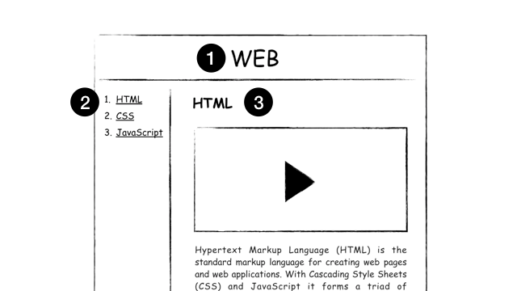

- 수업소개
- 프로젝트의 동기
- 기획
- 코딩과 HTML
- HTML 코딩 실습 환경 준비
- 기본 문법-태그 : strong u
- 혁명적인 변화 : h1~h6
- 통계에 기반한 학습
- 줄바꿈 : br p
- HTML이 중요한 이유
- 최후의 문법 속성과 img
- 부모 자식과 목록 : li ul ol
- 문서의 구조와 슈퍼스타들 : !doctype html
- HTML 태그의 제왕 : a
- 웹사이트 완성
- 원시웹
- 인터넷을 여는 열쇠 : 서버와 클라이언트
- 웹호스팅 (github pages)
- 웹서버 운영하기
- 수업을 마치며 1
- 수업을 마치며 2
- 수업을 마치며 3
- 코드의 힘 : 동영상 삽입
- 코드의 힘 : 댓글 기능 추가
- 코드의 힘 : 채팅 기능 추가
- 코드의 힘 : 방문자 분석기
3.기획

4.코딩과 HTML
부호 또는 신호라는 의미의 코드 (code)
원천이라는 뜻의 소스 (Source)
웹에서는 결과를 웹 페이지
웹페이지가 모여있으면 웹사이트
퍼블릭 도메인(Public Domain)
5.HTML 코딩 실습 환경 준비
에디터는 github.com에서 만든 Atom(아톰)입니다.
https://atom.io/
웹브라우저에서 볼 수 있는 웹페이지는 확장자가 html
웹페이지가 모여있으면 웹사이트